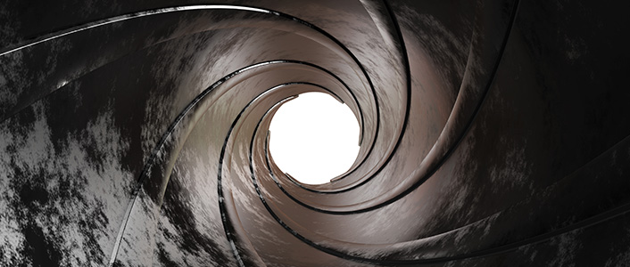

Pár érdekesség kezdő fegyvertatóknak vagy éppen kíváncsiskodóknak.
AR-15 működése.
Fegyvertakarítás fontossága.

A cső megfelelő ápolása segít megőrizni a fegyver hosszantartó pontosságát. A fegyvercső megfelelő ápolásának fontosságát alátámasztják katonai tesztek is. Ezek a tesztek bebizonyították, hogy azok a csövek melyeket megfelelően ápoltak, akár 10 000 lövés után is megőrizték pontosságukat, míg egy új cső pontossága a nem megfelelő ápolás miatt akár egy vadászszezon alatt elveszhet!
A cső gyors állapotromlását a csappanytú és a lőpor égéséből keletkező igen agresszív maró anyag okozza, mely belülrő erősen korrodálja a cső falát. A régi (főleg orosz 7,62 * 54 R) versenylőszerekre ez különösen jellemző volt. A cső aktuális állapotáról endoszkópos vizsgálattal tudunk meggyőződni. A pontosság romlását (2-3 szoros szórásnövekedés is elképzelhető) az okozza, hogy a csövön áthaladó lövedék nem megnyúlik, hanem a korrodált fal azt "megfaragja".